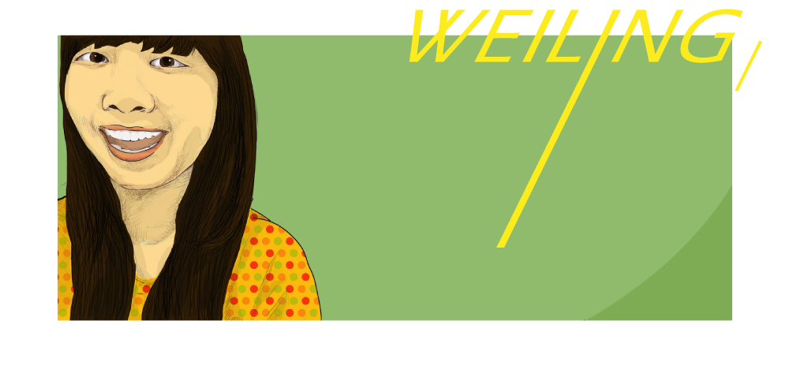
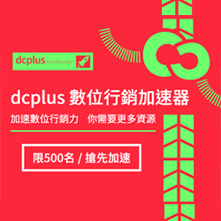
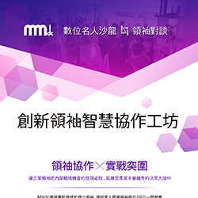
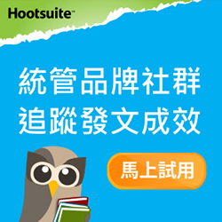
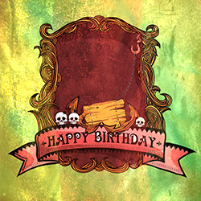
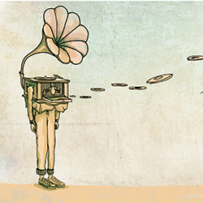
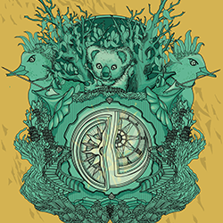

徐瑋伶 ／ Hsu, Wei - Ling
1992 . 03 出生
2014 . 06 畢業於國立嘉義大學視覺藝術系
2014 . 09 開始在MMdc擔任視覺設計助理至今 ，
負責視覺設計執行 ， 擅長利用各種媒材達成設計創作 ， 擁有天馬行空的想像力 ， 與畫筆為伍，
有個使命是守護好圖 。
長期在藝術與設計的薰陶中 ， 覺得能從寫書法體會自我 ， 如果一張宣紙是人生 ， 墨在紙上的力
透紙背是走過的路 ， 一支得心應手的毛筆是情感 ， 一瓶撲鼻的墨香是經歷 ， 每字每筆刻畫出獨
一無二的姿態 ， 也是令人欣賞 、 羨慕的姿態 。
  
  